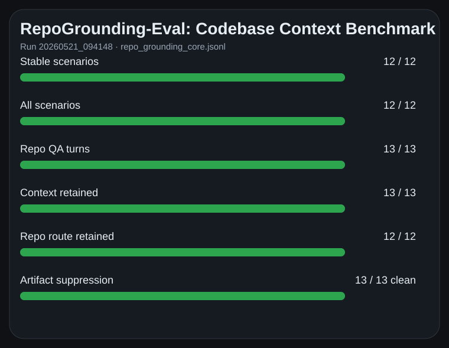

Native GUI layer
Custom C++ desktop interface using Skia for rendering and SDL2/OpenGL for windowing, with conversation, context, settings, tool, evidence, and diagnostic surfaces.
A native C++ project-aware AI desktop workspace for working with software projects. Coeus AI combines a custom Skia/SDL2 GUI, local project context, retrieval over codebases, a policy-first compiled-turn runtime, tool/workflow execution, structured telemetry, and a private headless evaluation harness used to test repository-grounded behaviour.
Public release scope: this repository is a portfolio/demo package. The full source code remains private, but this public package provides documentation, architecture notes, demo guidance, benchmark reports, release material, and links to the compiled Windows GUI demo.
A private review package is available on request with clean codebase metrics, source-tree structure, architecture/study notes, selected implementation evidence, screenshots, and headless evaluation evidence.
Coeus AI was built around the idea that an assistant should understand the currently loaded project, not just answer as a generic chatbot. The app is designed to work against local software projects, inspect project context, retrieve relevant source files, answer repository-aware engineering questions, compare files semantically, and preserve context across follow-up turns.
The goal is not simply to wrap a model in a chat window. Coeus AI explores the application/runtime layer around AI-assisted software work: project state, retrieval, context assembly, tool-style operations, workflow routing, validation, telemetry, and repeatable evaluation.
Internally, the system is organized around a policy-first turn pipeline. A user turn is compiled into canonical turn state before retrieval, prompt packing, tool routing, validation, and telemetry export consume it.
A short project walkthrough video will be added here. The planned video should show the native GUI, project loading, source-grounded repository QA, negative grounding, evaluation reports, and the public/private release boundary.
Replace this placeholder with a YouTube, Loom, or GitHub-hosted video link.
A common failure mode in AI coding tools is that they sound confident while losing repository context, hallucinating unsupported features, or routing normal codebase questions into the wrong workflow. Coeus AI explores a more structured approach to project-aware assistance.
Coeus AI is structured as a native desktop AI workspace with a modular runtime core. The architecture separates the GUI, compiled turn state, project context, retrieval, tools/workflows, provider integration, validation, telemetry, and headless evaluation.
Custom C++ desktop interface using Skia for rendering and SDL2/OpenGL for windowing, with conversation, context, settings, tool, evidence, and diagnostic surfaces.
A separate private headless runtime supports automation and repository-grounding evals without requiring the GUI, while still exercising the same core runtime concepts.
User input is normalized into canonical turn state before retrieval, prompt assembly, tool routing, validation, and telemetry consume it.
Maintains project inventory, file context, searchable source records, summaries, memory/snapshot support, BM25/vector/hybrid retrieval, and source-evidence surfaces.
Supports command handling, project operations, file-context tools, planning/apply-style flows, local/remote tool execution, and deterministic workflow routing.
Structured markers, traces, run bundles, answer post-processing, and validation rules support debugging, route analysis, artifact suppression, and private eval reporting.
The private source review shows that Coeus is organized around a compiled-turn architecture rather than a prompt-only chatbot flow. The public summary below keeps the idea high-level while preserving the private implementation boundary.
Key distinction: Coeus separates turn semantics, retrieval/source evidence, packed prompt context, tool execution, validation, and telemetry. This is the main architectural reason it is more than a simple model wrapper.
Custom Windows desktop application built with C++20, Skia rendering, and SDL2/OpenGL windowing.
Designed around the active local project, selected context, file inventory, conversation state, and workflow state.
Retrieves relevant project files or chunks and assembles context for repository-grounded answers.
Supports architecture questions, source-flow tracing, file responsibility explanations, semantic comparisons, and absent-feature analysis.
Runtime concepts for command handling, project operations, planning/apply-style flows, task orchestration, and tool routing.
Structured markers and traces support debugging, route analysis, context-packing inspection, artifact suppression checks, and private headless evaluation.
The public repository is intentionally a demo and documentation package. For code-level review, a separate private review package can be shared on request.
A local scc scan of the private source tree, excluding generated
parser code, static assets, build output, vendor folders, and environment files,
reports a substantial native C/C++ application codebase.
These figures are used as codebase-scale evidence, not as a quality score. The raw tooling also outputs COCOMO-style effort estimates, but those are heuristic model estimates and are kept in the private metrics evidence rather than promoted as actual project cost.
scc summary and by-file metrics.The private source tree includes dedicated subsystems for GUI/rendering, agent runtime, policy and prompting, context/retrieval, lattice/context assembly, memory, summaries, project state, command/tool execution, telemetry/export, and headless evaluation support.
Secrets, provider configuration, local traces, generated caches, build outputs, private project data, environment files, and generated parser/static asset noise are excluded from the review package.
The included RepoGrounding reports were generated from a private headless evaluation harness. They are codebase-context benchmarks, not SWE-bench-style autonomous issue-repair tests.
Focused benchmark for repository bootstrap, source-grounded QA, runtime tracing, semantic comparison, negative grounding, multi-turn continuity, route discipline, and artifact suppression.

Harder benchmark covering source-order tracing, exact-symbol questions, negative-grounding distractors, multi-turn continuity, semantic-to-diff routing discipline, and artifact suppression under pressure.

What the reports show: repository-context bootstrap, source-grounded answers, negative grounding, semantic comparison, follow-up continuity, route retention, diff-route discipline, and internal artifact suppression.
What they do not claim: full autonomous software repair, SWE-bench performance, production deployment readiness, pull-request quality, or broad benchmark generalization.
The most important material is summarized directly on this page. The collapsible sections below give a readable table of contents without requiring visitors to crawl through repository files.
Explains the problem, design goal, technical challenge, solution, evaluation evidence, and engineering skills demonstrated by Coeus AI.
Open full case study on GitHub →Summarizes the native GUI, application state, agent runtime, compiled-turn pipeline, project context, retrieval, tools, telemetry, and headless eval runtime.
Open full architecture document →Describes the Windows GUI demo release, suggested presentation path, runtime expectations, limitations, and release boundaries.
Links to the generated RepoGrounding reports and benchmark README. These are codebase-context benchmarks for repository grounding, not autonomous repair claims.
Planned screenshot and video guidance for demonstrating the native GUI, source-grounded answers, telemetry surfaces, and evaluation reports.
Explains what is public, what remains private, what the demo does and does not claim, and the current project status.
High-level dependency and build-environment notes. The public repo does not expose the full private build/source internals.
The compiled Windows GUI demo is distributed through GitHub Releases rather than committed directly into the repository. Download the latest release, extract it locally, and run the included executable from the extracted folder.
Coeus AI is currently presented as a portfolio/demo release. The public repository includes documentation, generated evaluation reports, release material, screenshots/video planning notes, and public-facing project notes.
It does not include the full private source code, private prompts, proprietary runtime internals, private traces, private provider configuration, private project data, generated caches, or the private headless runner.
A private codebase review package can be shared on request. That package contains source-tree evidence, clean local metrics, architecture and technical study notes, selected implementation evidence, screenshots, and evaluation material while excluding secrets, environment files, local traces, and build artifacts.